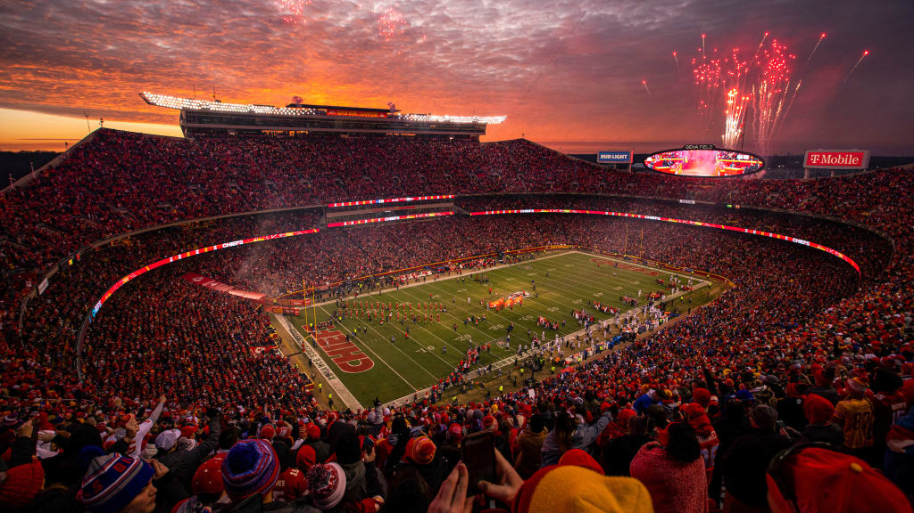

History of the Kansas City Chiefs
The Kansas City Chiefs, founded in 1960 as the Dallas Texans, were one of the original teams in the American Football League (AFL). The franchise relocated to Kansas City, Missouri, in 1963 and was renamed the Kansas City Chiefs. Under the leadership of legendary coach Hank Stram, the Chiefs won three AFL championships and made history by defeating the Minnesota Vikings in Super Bowl IV in 1970, becoming the second AFL team to win a Super Bowl. Over the years, the team has become a powerhouse in the National Football League (NFL), particularly in recent years under the guidance of head coach Andy Reid and superstar quarterback Patrick Mahomes. The Chiefs solidified their place in NFL history with a thrilling victory in Super Bowl LIV in 2020, ending a 50-year championship drought. Today, the franchise remains one of the most successful and beloved in professional football, known for its passionate fanbase and iconic Arrowhead Stadium.
GEHA Field at Arrowhead Stadium
Arrowhead Stadium, located in Kansas City, Missouri, is the home of the Kansas City Chiefs and one of the most iconic venues in professional football. Opened in 1972, it was designed by architect Charles Deaton as part of the Truman Sports Complex and is renowned for its unique design, which enhances the fan experience and acoustics. With a seating capacity of 76,416, it is one of the largest stadiums in the NFL. Arrowhead has undergone significant renovations over the years, most notably a $375 million upgrade completed in 2010, which added modern amenities, updated facilities, and a state-of-the-art video board. Known as one of the loudest stadiums in the world, Arrowhead holds the Guinness World Record for the loudest crowd roar at 142.2 decibels, achieved during a 2014 game against the New England Patriots. The stadium’s passionate fanbase, fondly referred to as the "Chiefs Kingdom," and its vibrant game-day atmosphere make Arrowhead a revered landmark in the world of sports.
Are we in the good ole days?
The KC Chiefs were not known for much besides coming up short for most of the 2000s until one man changed it all. The Patrick Mahomes' era in Kansas City has been nothing short of legendary. After being drafted by the Chiefs in 2017, Mahomes quickly took the league by storm, becoming the starting quarterback in his second season. In 2018, he delivered a spectacular performance, throwing for over 5,000 yards and 50 touchdowns, earning the NFL MVP award and cementing his status as one of the most electrifying quarterbacks in the game. His ability to make jaw-dropping plays, both in and out of the pocket, revolutionized the position. Mahomes led the Chiefs to their first Super Bowl appearance in 50 years in 2020, where he guided them to a thrilling comeback victory over the San Francisco 49ers, including a memorable walk-off touchdown pass to Mecole Hardman. That victory ended a 50-year championship drought for the Chiefs and marked the beginning of what promised to be a dynasty. Mahomes continued to dominate, taking the Chiefs to multiple playoff appearances and securing another Super Bowl title in 2023, further solidifying his place among the all-time greats. His leadership, poise, and clutch performances have made Mahomes the face of the franchise and one of the most celebrated players in NFL history.